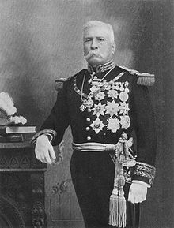

Porfirio Díaz
(José de la Cruz Porfirio Díaz Mori; Oaxaca, 1830 - París, 1915) Del nombre de este militar y estadista mexicano procede la designación de todo un periodo de la historia moderna de México: el Porfiriato (1876-1911). Y el mismo sufijo ya sugiere lo que fue: una férrea dictadura personalista y paternalista que reprimió toda oposición y anuló la libertad de prensa.
Como los monarcas del antiguo despotismo ilustrado, Porfirio Díaz pensaba estar sirviendo a su país al dotarlo, después de medio siglo de guerras y convulsiones, de la paz y de la estabilidad imprescindibles para el progreso económico, social y cultural. Ciertamente logró, aunque a sangre y fuego, la pacificación del país y su despegue en muchas áreas. Pero, hacia el final de su mandato, su política había abierto una enorme brecha entre ricos y pobres; y, en 1910, su decisión de mantenerse en el poder prendió la mecha de la Revolución mexicana.
Biografía
Huérfano de padre desde los tres años, Porfirio Díaz ingresó en el Seminario de Oaxaca para seguir la carrera eclesiástica, pero pronto cambió de opinión. Cursó luego estudios de leyes en el Instituto de Ciencias y Artes, donde fue discípulo del futuro presidente liberal Benito Juárez, quien impartía derecho civil; en adelante sería seguidor suyo en lo político. El Instituto fue clausurado por orden del presidente Santa Anna en 1854. Ese mismo año intervino en la Revolución de Ayutla y apoyó al general Juan Álvarez para derrocar a Antonio López de Santa Anna.
Poco después, Porfirio Díaz ingresó en el ejército, y su carrera militar fue meteórica. En la guerra de Reforma (1858-1861), conflicto civil en el que se enfrentaron conservadores y liberales, apoyó la causa liberal. La guerra concluyó con la victoria de los liberales y llevó a la presidencia a Benito Juárez (1861); finalizada la contienda, Porfirio Díaz fue ascendido a general y elegido diputado.
Apenas un año más tarde tomó de nuevo las armas contra la invasión francesa (1862-1863) y la coronación de Maximiliano I (1864-1867) como emperador de México. Fue jefe de brigada en Acultzingo en abril de 1862 y ese mismo año participó en la batalla de Cinco de Mayo al lado de Ignacio Zaragoza. En 1867 protagonizó una brillante acción militar en Puebla: tras sitiar la ciudad, realizó un asalto sangriento y rápido contra las tropas del emperador Maximiliano, que se refugiaron en los cerros de Loreto y Guadalupe. Sin perder tiempo, avanzó hacia la capital de la República y la tomó el 2 de abril de 1867, hecho que fue de gran trascendencia militar, pues adelantó la caída del Imperio de Maximiliano y el triunfo de Juárez.
El prestigio y popularidad ganados en esta última campaña lo dejó en situación de optar a la presidencia; pero el Congreso prefirió a Benito Juárez en 1867 y lo reeligió en 1871. En noviembre del mismo año Porfirio Díaz lanzó el llamado Plan de La Noria, en el que se pronunciaba contra el reeleccionismo y el poder personal y a favor de la Constitución de 1857 y de la libertad electoral; la sublevación fracasó y Díaz hubo de abandonar el país.
Juárez falleció en 1872, y una amnistía concedida entonces permitió a Díaz regresar a México. Tras la muerte de Juárez, la presidencia recayó en Sebastián Lerdo de Tejada. Cuando en 1876 Lerdo de Tejada anunció su propósito de presentarse a la reelección, Porfirio Díaz se rebeló de nuevo (Plan de Tuxtepec); esta vez consiguió expulsar a Lerdo de Tejada y accedió a la presidencia.
El Porfiriato (1876-1911)
Un año después, en 1877, el Congreso lo declaró presidente constitucional. En este primer mandato (1876-1880), Porfirio Díaz fue coherente con las ideas que había defendido: impulsó una reforma de la constitución en la que se introdujo el veto expreso a las reelecciones presidenciales consecutivas, y, concluido su periodo, pasó el testigo al general Manuel González (1880-1884). Durante el gobierno de González fue ministro de Fomento y gobernador de Oaxaca.
Finalizado el mandato de González, Porfirio Díaz presentó de nuevo su candidatura a la presidencia (la constitución sólo vetaba las reelecciones consecutivas) y salió elegido. Tomó posesión del cargo el 1 de diciembre, y tres años más tarde promovió una enmienda, que fue aprobada por el Congreso, al artículo 78 de la Constitución, la cual le acreditaba para una nueva reelección; en 1890 promulgó una nueva reforma de dicho artículo para hacer posible la reelección indefinida, lo que le permitió permanecer en el poder hasta 1911.
Todo ello fue posible porque Porfirio Díaz, ejerciendo su poder omnímodo, había ido reduciendo las instituciones políticas liberales a una mera farsa democrática: ordenó la eliminación de todos los adversarios políticos posibles, y la prensa fue sometida o perseguida cuando intentaba mantenerse independiente. Puede afirmarse que, a partir de 1890, Porfirio Díaz gobernó al margen de la Constitución, y prescindió de la división de poderes y de la soberanía de los estados. El Congreso, sumiso a sus deseos, modificaba las leyes según sus caprichos y le confería facultades extraordinarias a su conveniencia; existía un partido único y los sufragios eran puro trámite.
El pueblo mexicano estaba hastiado del desorden y la guerra, y Díaz se propuso imponer la paz a toda costa. México no contaba con fondos ni tenía capacidad crediticia porque no había pagado sus deudas con puntualidad, así que había que atraer al capital extranjero; el problema era que nadie invertiría en México si no había estabilidad y paz. Con una política de mano dura, Porfirio Díaz trató de eliminar las diferencias de opiniones sobre asuntos políticos, y se dedicó a mejorar el funcionamiento del gobierno. "Poca política y mucha administración" fue el lema de aquel tiempo.
La paz no fue total, pero Díaz consiguió mantener el orden mediante el uso de la fuerza pública. Policías y soldados persiguieron lo mismo a los bandoleros que a los opositores.
Gracias a esa nueva situación de estabilidad, aumentó la demanda de trabajo y se hizo posible el desarrollo económico; el país contaba con recursos y los empresarios podían obtener buenas ganancias.
Sin embargo, con el paso del tiempo se hizo evidente que la prosperidad era sólo para unos pocos. Creció el descontento por la miseria en que vivía la mayor parte de la población, y amplios sectores sociales tomaron conciencia de que Díaz llevaba demasiado tiempo en el poder.
Cada vez fue más difícil mantener el orden: en los últimos años del Porfiriato reinó un clima de represión en el que la fuerza de las armas se utilizaba con violencia creciente. De ello dan muestra la torpeza con que se negociaron y la dureza con que se reprimieron las huelgas de Cananea (1906), en Sonora, y de Río Blanco (1907), en Veracruz, así como el modo en que se persiguió a los periodistas que criticaban al régimen y a cualquiera que manifestara una opinión que no fuese la oficial.


 2
2 4
4 6
6 8
8